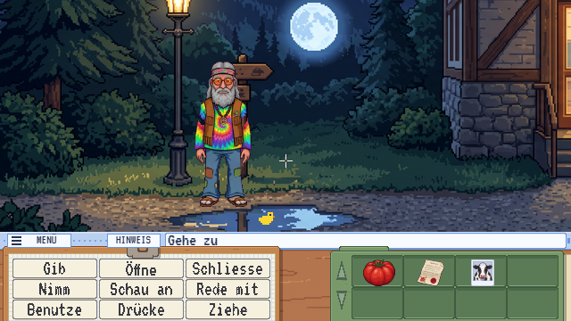
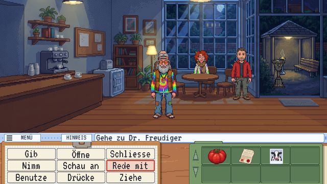
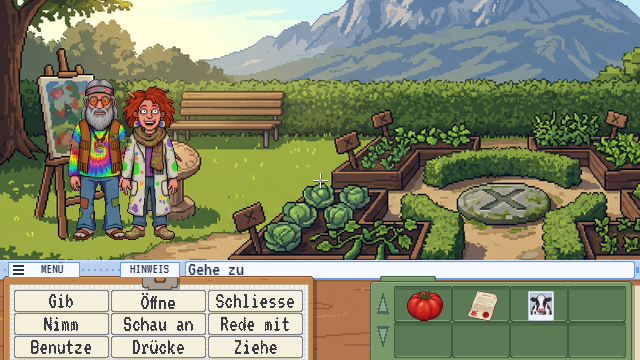
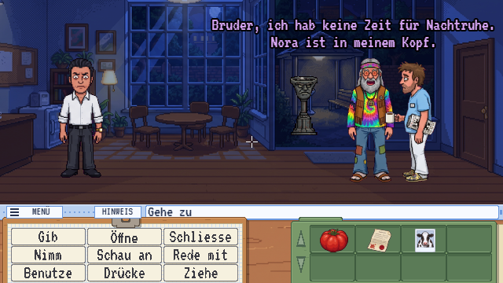
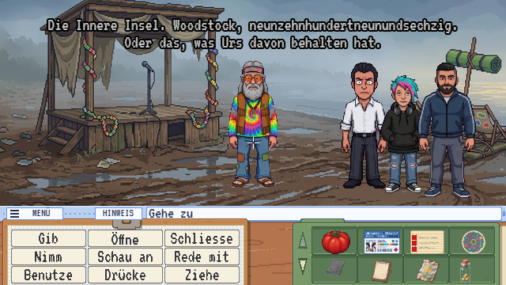
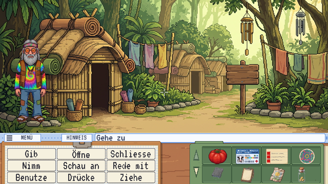
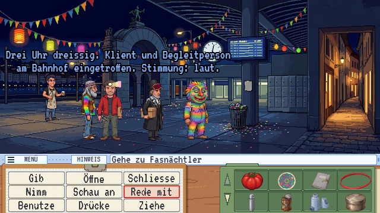
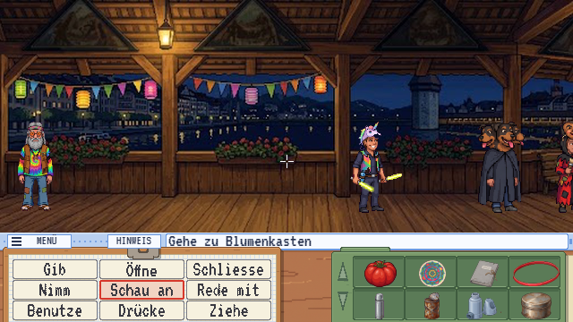
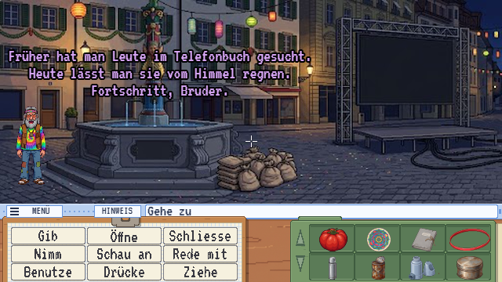

Trailer
Worum geht’s?
Urs Amstutz, 60, Alt-Hippie aus dem Entlebuch, landet per Gerichtsbeschluss in der Klinik Haus Lehn und will nur eins: ein Therapieerfolg werden. Dafür muss er drei Therapieziele abhaken – und dabei Ich-Botschaften-Duelle, Aktenschränke und das Kneipp-Becken überleben.
Kaum hat er es geschafft, übernimmt der Geist-Coach Swami Profitananda per Videobildschirm die Station («Dein Potenzial ist mein Geschäftsmodell») und schickt Urs auf die Innere Insel, tief in sein eigenes Unterbewusstsein. Dort muss er endlich etwas klar sagen, statt es weise zu umschreiben. Spoiler: Es waren immer nur Tomaten.
Szenen
Echte Bilder aus dem Spiel (HTML-Version) – vier Episoden in Haus Lehn und auf der Inneren Insel, dann die Luzerner Fasnacht.

Episode 1Nachts um zwölf auf der Rampe. Der Pilatus schaut zu. Der Nachtpfleger auch. Beide urteilen nicht, aber man spürt es. 
Episode 1Café «Achtsam». Kamillentee, ernste Gesichter und ein Kartenleser, der mehr weiss als alle anderen. 
Episode 2Der Klinikgarten. Kohl, Kräuter, Kunsttherapie. Und mittendrin ein Hippie, der im Thymian steht. 
Episode 3Nachts in der Klinik. «Bruder, ich hab keine Zeit für Nachtruhe.» Die Überfahrt beginnt leise. 
Episode 4Die Innere Insel. Woodstock 1969. Oder das, was Urs davon behalten hat. 
Episode 4Im eigenen Kopf. Dschungel, Hütten, Windspiele. Hier wohnen Urs’ Erinnerungen – nicht alle sind freundlich. 
Episode 5Luzern, 03:30 Uhr. Schmutziger Donnerstag. Klient und Begleitperson eingetroffen. Stimmung: laut. - Episode 5
Die Guggenmusig probt. Lautstärke: therapeutisch nicht abgeklärt. 
Episode 5Die Kapellbrücke. Ohne Grende kein Durchgang. Ein dreiköpfiger Hund steht trotzdem da. 
Episode 5Der Kapellplatz. Um fünf regnet es sechs Millionen Fötzeli. Früher hat man Leute im Telefonbuch gesucht.
Das steckt drin
-
9 Verben & Satzzeile wie 1990
«Öffne», «Nimm», «Rede mit» und sechs weitere: Verb anklicken, Ding anklicken, fertig. So haben wir damals Adventures gespielt – nur mit weniger Sackgassen.
-
Volle Sprachausgabe
Jede Zeile wird gesprochen, vom Nachtpfleger bis zum Geist-Coach. Der Text läuft zum Mitlesen trotzdem mit.
-
Kriens, Pilatus, Luzerner Fasnacht
Eine Klinik am Fuss des Pilatus, ein Kapellplatz voller Guggenmusig: Lokalkolorit statt Fantasy-Insel von der Stange.
Bereit für das Therapieziel?
Alle fünf Episoden sind spielbar – neu: Urs an der Luzerner Fasnacht. Es ist eine Testversion – nicht das fertige Spiel: Es kann noch wackeln, Texte, Bilder und Rätsel ändern sich, und Spielstände können bei Updates ungültig werden. Schau trotzdem rein – Urs freut sich.